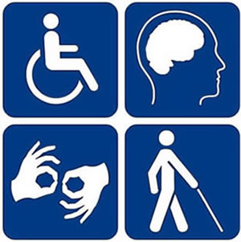

Assistive
Technologies
Assistive
Technologies
The principal role of Student Support is to coordinate, enhance and introduce support services to ensure that students have a rewarding and fulfilling experience,
both personally and academically, while at college. The Student Support Office is guided by the Wellness Concept which values a students social, physical, psychological and spiritual wellbeing.
For further information on Student Support log on to
Click Here:
Services Available include
Disablity Support
Academic Support
Student Welfare
Mike Goldrick is the Student Support Officer at National College of Ireland.
You can contact him on (01) 659 9245 or e-mail michael.goldrick@ncirl.ie
© Copyright National College of Ireland - 2013
Rich - Ian - Martin